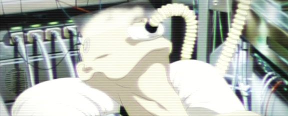
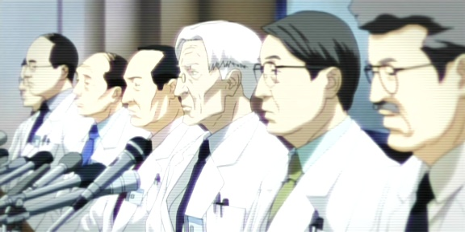

LES ÉVÈNEMENTS CONNUS
Ivan l'Aveugle (littéralement "Ivan aux yeux bandés") : Fait référence au Modus Operandi consistant à pirater le Réseau de Sécurité Publique du système IR et couper les images de l'instant où l'enlèvement se produit. Cette méthode est particulièrement utilisée pour l'enlèvement de femmes, généralement jeunes, sur la place publique. Elles sont emmenées hors du Japon et leurs organes vendus au marché noir. La raison pour laquelle il n'y a jamais aucun témoignage visuel alors que les enlèvements ont lieu au grand jour est probablement dû au fait que le "bandage des yeux" s'étend également aux yeux des passants via leurs cyber-cerveaux.
Alliance Chine/Taïwan : Un traité signé en réaction au Pacte de Sécurité forgé entre le Japon et l'Empire Américain.
Sclérose Cyber-Cérébrale (2019) : A l'époque où l'implantation des cerveaux cybernétiques commençait à devenir courante, un désordre particulier de ces implants créa la consternation dans les milieux médicaux. Des parties du cerveau recevant l'implant se dégradaient progressivement, finissant par entraîner la mort cérébrale. Ce phénomène reçut le nom de sclérose cyber-cérébrale. Bien que sa probabilité d'apparition soit faible, toute personne possédant des implants cybernétiques cérébraux peut en être victime. Aucun traitement n'ayant pu être développé, la sclérose fut classée avec la tuberculose, le cancer et le SIDA comme les maladies incurables du 20e siècle. En termes de symptômes, elle se manifeste d'abord par des pertes de mémoires légères. A mesure que la maladie progresse, ces déficiences s'aggravent et apparaissent l'aphasie et l'impossibilité d'accéder à toute forme de mémoire artificielle externe. Eventuellement, la dégradation mène à la mort. Bien qu'il soit possible de retarder l'évolution des symptômes par un traitement approprié, la sclérose en elle-même s'avéra longtemps incurable, provoquant un vent de panique temporaire mais violent parmi la population possédant des implants cérébraux lorsque l'existence de la maladie fut rendue publique. Oubliant commodément l'enthousiasme avec lequel ils avaient vanté les mérites de la technologie cybernétique, les media se lancèrent dans leur coutumière frénésie de commentaires mal informés et de critiques après-coup d'officiels gouvernementaux de haut niveau qui avaient profité de la mode cybernétique en quittant leurs fonctions pour des postes lucratifs dans des entreprises fabriquant des implants cérébraux. Le public ne tarda pas à suivre le mouvement et diverses associations anti-cybernétique se formèrent, comme le Front de Libération Humain et d'autres d'inspiration Néo-Luddite et prônant le retour à la nature.

Le vaccin Murai, du nom de son inventeur le docteur Murai Chitose, fut présenté comme un remède à la sclérose. Cependant, à l'époque où il fut élaboré, le corps médical soutenait l'élaboration d'un traitement faisant appel aux promesses de la nanotechnologie et aux micromachines. La voie immunologique suivie par le docteur Murai paraissait à leurs yeux dépassée et retardait le développement de nouvelles procédures médicales basées sur les micromachines. Les tests du vaccin furent vraisemblablement retardés suite à ces réticences. Le docteur Murai continua jusqu'au bout d'espérer la validation de ses travaux, mais il mourut en février 2021 à l'âge de 68 ans sans connaître la décision du comité d'évaluation des médicaments, qui rejeta initialement le vaccin, avant de se raviser inexplicablement en avril 2021, approuvant l'utilisation du vaccin sur des patients sélectionnés. Cette approbation ne fut jamais rendue publique, et il n'y a aucune trace officielle de quiconque aurait reçu le traitement.
Sous la pression du public exigeant une solution, le gouvernement annonça le développement d'un nouveau traitement par micromachines. L'effet d'annonce ne fut pas suivi d'effets notables et laissa plus de questions en suspense qu'il n'en résolut, le traitement d'avérant peu efficace. Mais les médias, après avoir brûlé sur le bûcher de l'opinion publique quelques boucs émissaires, estimèrent en avoir assez fait et passèrent au scandale suivant, entraînant à leur suite le public qui oublia rapidement jusqu'à l'existence du problème. Ce désintérêt massif fit perdre au passage la majeure partie de leur influence aux mouvements anti-cybernétique. Mais la sclérose n'a pas disparu, et les mystères entourant le vaccin Murai persistent, et en 2021 tous n'ont pas oublié.

Ainsi la Société du Tournesol, une société à but non-lucratif offrant un soutien aux particuliers en procès avec le gouvernement ou les grandes sociétés. Ils ont déposé à plusieurs reprises auprès d'agences gouvernementales des demandes d'information sur le vaccin Murai et les personnes l'ayant reçu. Cependant, le Ministère de la Santé, du Travail et de la Protection Sociale s'est à chaque fois retranché derrière l'Acte de Protection de la Vie privée pour rejeter ces demandes.
Loi Anti-Discrimination envers les Cyborgs : Avec la montée en popularité du Front de Libération Humain et l'augmentation conséquente du nombre de ses adhérents, le gouvernement constata une nette croissance du nombre des crimes perpétrés à l'encontre des cyborgs. De même, nombre de cyborgs vétérans ou réfugiés de guerre découvrirent que leurs sacrifices pour devenir meilleurs se retournaient contre eux et qu'ils étaient victimes de discrimination, restreignant leur capacité à trouver un emploi. La Loi Anti-Discrimination fut mise en place pour lutter contre cette nouvelle forme d'intolérance. Depuis, la cybernétisation est devenue monnaie courante et, les tensions étant largement retombées, la loi est devenue relativement obsolète.
Echelon : Le plus grand réseau d'espionnage électronique du monde. Opérant à partir de stations implantées dans l'Empire Américain, le Royaume Uni, le Canada, l'Australie et la Nouvelle-Zélande, le système capte transmissions radio et satellites, recueillant indifféremment appels téléphoniques, fax et emails du monde entiers. Il a été estimé qu'Echelon peut intercepter plus de 5 milliards de communications par jour.
Géofront : Extension d'une zone urbaine par l'aménagement de zones souterraines, la Région Autonome de Tohoka est un exemple de géofront. Nombre de ces complexes servent de sièges à des corporations, comme à Bertrave qui en compte plusieurs. Comme les arcologies, les géofronts sont souvent totalement auto-suffisants, aussi il y a parfois des ambiguïtés dans leurs relations avec les nations où ils sont installés. En particuliers, tous les géofronts disposent de leur propre réacteur nucléaire pour l'alimentation en énergie. De fait, le nom de géofront est souvent utilisé pour des réacteurs nucléaires souterrains.
Ghosts & Shells : Le terme Ghost commença à circuler peu de temps après la 3e Guerre Mondiale mais le concept qu'il désigne est bien plus ancien. Il se réfère à l'esprit d'une personne, son essence... Peut-être son âme, bien que ce mot paraisse suranné dans ce qu'il évoque de spiritualité alors que le terme de Ghost est ancré dans des considérations purement scientifiques. Fondamentalement, le Ghost est ce qui différencie l'être humain du robot. Quel que soit le degré de substitution du biologique par le cybernétique, un Ghost conserve son individualité et son humanité. A l'origine, parler du Ghost en dehors de son Shell (dans le contexte, le corps, qu'il soit organique ou non) n'avait pas de sens. La séparation était impossible à envisager tant leurs liens semblaient étroits. Ce n'est plus le cas. On sait maintenant que le Ghost peut exister sans Shell, et réciproquement.
On a même découvert qu'il était possible de transférer un Ghost d'un corps à un autre. Cependant, un Ghost est sujet à des dégradations lorsqu'il est maintenu en dehors d'un Shell (même aussi rudimentaire qu'un système de survie de base). Les principales retombées du concept de Ghost et Shell et de leurs interactions apparurent en criminologie. Lorsqu'un accusé est reconnu coupable d'un délit, une analyse technique est effectuée pour déterminer si la pulsion criminelle a été causée par une anomalie biologique ou cybernétique dans le cerveau. En cas de défaut du cyber-cerveau, l'accusé est jugé non responsable et relâché après réparation de la défectuosité. Dans le cas d'anomalie biologique, le processus devient plus invasif et peut mener à des extrémités comme la reprogrammation de personnalité, voire l'effacement total du Ghost. Si l'ensemble du Shell était artificiel, il sera généralement revendu en pièces détachées.
Incident de l'Etat de Shinuiji : En 2024, quand les nations étaient épuisées par les affrontements de la 4e Guerre Mondiale, l'Empire Américain demanda à l'ONU le déploiement de troupes d'interposition dans la Péninsule, où une guerre civile se poursuivait. Le but réel était l'obtention des droits miniers des mines d'uranium du nord de la Péninsule, dont l'exploitation allait être le point de départ de la résurrection de l'Empire Américain en tant que grande puissance. Les Forces d'Autodéfense furent déployées en réponse à la demande, leur première opération en dehors du territoire japonais depuis leur formation (elles n'avaient en effet pas participé aux deux derniers conflits mondiaux, en dehors de la capture de Nemuro). Le Premier ministre de l'époque fut victime d'un attentat à la bombe.
Le gouvernement imposa un strict contrôle de l'information ainsi d'éviter toute opposition au déploiement et détacha une unité spéciale entièrement constituée de cyborgs type PKF dans l'Etat de Shinuiji, une région relativement calme. L'agence en charge de la campagne de désinformation était l'Agence de Relations Publiques du Cabinet, le prédécesseur de l'actuelle Agence de Renseignement du Cabinet. A cette époque Shinuiji était une Région Administrative Spéciale et un pôle commercial sans intérêt militaire particulier, ce qui limitait les risques. Mais après la réunification, les restes de l'Armée Populaire choisirent une zone montagneuse à 20 km à l'ouest de Shinuiji comme base d'opération, le relief favorisant les opérations de guérilla. Dès l'arrivée des forces cyborgs, deux unités furent déployées pour nettoyer la zone. Les unités d'infanterie standards restèrent sur site, en alerte accrue suite à des rapports des services de renseignements indiquant que les dernières unités d'élite de l'Armée Populaire préparaient un assaut sur Shinuiji. La compagnie PKF avait pour mission de contourner les positions ennemies par le nord et de frapper en premier. Les cyborgs s'engagèrent dans les montagnes et, pour cette première sortie sur le terrain de soldats cyborgs, les PKF firent la preuve de leur efficacité en progressant aisément, malgré la neige et des températures atteignant -20°C. Sur le trajet, cependant, le peloton de tête découvrit le long d'une rivière frontalière un camp de réfugiés qui n'était pas mentionné dans le briefing de mission. Les soldats de l'Armée Populaire, qui à ce stade du conflit n'étaient guère plus que des bandits à peine organisés, étaient en train de piller le camp. Devant ce spectacle répugnant, les soldats cyborgs chargèrent sans hésiter. Ils n'étaient que trente contre cent vingt, mais ils étaient une troupe d'élite renforcée par leurs corps cybernétiques, alors que leurs adversaires étaient désorganisés, affamés, et pour un bon nombre désarmés. Le combat fut rapide, un carnage unilatéral parfait reflet de celui des réfugiés avant l'arrivée des PKF.
Par la suite, l'unité PKF fut maintenue en alerte constante suite à des rapports réguliers sur l'activité de l'Armée Populaire mais ils ne livrèrent aucun autre combat. Cet état de tension permanente était supportable pour les troupes de ligne, en contact avec la population et occupées par divers projets. Mais l'unité cyborg, tenue à l'écart dans un camp isolé, ne pouvait que ressasser ce qu'ils avaient vécu et cela provoqua une épidémie de PTSD (syndrome post-traumatique). Leur premier combat avait été un carnage d'une facilité effrayante, et cela commença à les ronger de l'intérieur. Ceux d'entre eux qui avaient conservé leurs poumons naturels tentèrent d'étouffer les visions d'horreur qui les poursuivaient dans le haschich amené par des réfugiés, d'autres dans l'alcool de synthèse. Quand la discipline commença à se dégrader, et la censure ayant étouffé toute reconnaissance du massacre au camp de réfugié, les médias conspuèrent les soldats. Leur hiérarchie, craignant le scandale que provoqueraient des révélations sur l'état pitoyable dans lequel ils étaient, aggrava la situation en les consignant dans leur camp. Toute sortie, jusqu'aux permissions pour rentrer au pays, furent suspendues. Leur humiliation atteignit son point culminant lorsque des fuites révélèrent aux média le massacre du camp de réfugiés et qu'une rumeur accusa les Forces d'Auto-Défense d'en être responsables. Les populations locales manifestèrent violemment, exigeant des explications. Mais les consignes drastiques de secret interdisaient aux jeunes soldats et à leurs officiers de se défendre et ils passèrent les trois mois suivants en parias maintenus enfermés dans leur propre camp, insultés quotidiennement sans pouvoir répondre. A la fin de cette période, les restes de l'Armée Populaire se rendirent et, leur mandat achevé, les Forces d'Auto-Défense quittèrent le pays. Les média se désintéressèrent aussitôt de toute l'histoire.
Pacte de sécurité Amérique Impériale / Japon : Le Miracle Japonais fut utilisé par le gouvernement japonais comme argument de poids pour proposer à l'Amérique Impériale un traité où elle serait l'épée (par son arsenal nucléaire) et le Japon le bouclier (le Miracle Japonais les protégeant de toutes représailles). Cette coopération partage les officiels Japonais, certains se félicitant de la sécurité qu'elle apporterait aux pays et d'autres craignant qu'elle n'émousse la volonté nationale d'indépendance.
Miracle Japonais : Appelé également Miracle Asiatique selon qui est interrogé, mais il est généralement assumé qu'il s'agit de la même chose. C'est en fait un aérosol de micromachines capables de neutraliser les éléments radioactifs. Le Miracle permit au Japon, qui en possède l'exclusivité, de retrouver son statut de grande puissance et d'user de cette influence après la 3e Guerre Mondiale. En particulier, le Japon compte faire du Miracle le pilier d'une nouvelle relation avec l'Amérique Impériale.
Laughing Man : La jeunesse et les mouvements Underground ont élevé au rang d'icône culturelle le logo du Laughing Man, le plus célèbre cas terroriste corporatiste des dernières années. Sa première apparition fut liée au kidnapping d'Ernest Serano, PDG de Cerano Genomics. Six autres actes de chantage envers des sociétés travaillant dans le domaine des micromachines lui ont été imputés. Le symbole qu'il utilise pour se dissimuler est largement connu, mais c'est bien tout. Personne n'a la moindre idée de son identité ou de ses motivations.

Micromachines : Appelées aussi nanites. La technologie basée autour de machines construites et opérant à l'échelle atomique a changé le monde et est à l'origine d'avancées phénoménales dans d'autres domaines scientifiques. Des maladies furent éradiquées. La famine disparut. La pollution des cités fut éradiquée. La percée originelle, étonnamment, s'est perdue. Personne ne sait plus qui a révolutionné le monde, ni quand. En tout cas, pratiquement toutes les grandes sociétés modernes comptent au moins une branche d'activité faisant usage de micromachines, quand elles ne sont pas la base même de leur activité. On peut dire que les MM sont aujourd'hui plus répandues que les insectes.
Leur première application fut la correction d'anomalies génétiques chez les animaux mais elles trouvèrent leur principal champ d'application dans la cybernétique, à qui elles permirent d'être plus qu'un palliatif. La nanotechnologie permet en effet d'intégrer parfaitement des éléments électroniques dans des organes, ouvrant la voie à des applications de plus en plus vastes de la cybernétique, jusqu'au remplacement corporel total. La totalité des implants cybernétiques actuels doivent leur existence aux micromachines, de même que les robots. Et le Miracle Japonais en est sans doute la plus spectaculaire manifestation. On peut dire que les légendaires bienfaits comme la Pierre Philosophale ou la Fontaine de Jouvence existent aujourd'hui, et qu'elles mesurent un millionième de millimètre.
Une particularité des micromachines est qu'elles s'implantent avec une telle force parmi les cellules cérébrales qu'elles ne peuvent plus être retirées sans causer de dommages après leur "mort", pas même par l'insertion de nouvelles MM. Compte tenu de l'espace des plus réduit qu'elles occupent, cela n'est pas considéré comme un problème. Mais cela pourrait changer si quelqu'un trouvait le moyen de réactiver à son avantage ces MM "mortes".
Opération de Recapture de Meguro : Durant l'invasion, une flotte tenta un débarquement sur l'île septentrionale. Bien que la bataille de Nemuro soit le principal affrontement qui aie eu lieu sur le sol Japonais pendant la guerre, la bataille de Meguro n'a rien à lui envier. Sa capture eut lieu peu de temps avant ou après l'affrontement de Nemuro (ce point n'a jamais été clairement élucidé) et, contrairement à l'autre bataille, où l'ennemi ne parvint pas à gagner du terrain, Meguro fut le théâtre de combats urbains acharnés avec de nombreuses percées ennemies. L'emplacement de la ville est remarquable par sa morphologie accidentée, inhabituelle sur la côte Est.
Riz "Micromachines" : La nanotechnologie fut très vite détournée de son champ d'application principal vers l'amélioration des produits agricoles, et elle s'y avéra aussi productive que dans la cybertechnologie. A un coût réduit, elle permit en effet le développement de plantes à haut rendement qui mirent un terme au problème de la faim dans le monde. Bien que l'usage de micromachines dans les produits alimentaires ait d'abord été considéré avec révulsion par le public, son produit phare, le Riz MM, rencontra un grand succès au Japon où les terres arables sont rares et les besoins alimentaires avaient grandement augmenté pendant la guerre. Une variété, la Rikuu-132, s'avéra la plus intéressante, avec un important rendement à l'hectare, une grande résistance au froid et des besoins réduits en eau et ensoleillement.
Le Rikuu-132 était originaire de la TAR (Région Autonome de Tohoka) et à la mort de son créateur, Mr Yazawa, le Ministère de l'Agriculture, des Forêts et de la Pêche déposa un brevet sur son invention au nom du Japon. Cette décision fut contesté par les résidents de la TAR qui revendiquaient leur indépendance vis-à-vis du Japon mais leur statut n'ayant pas été approuvé par l'ONU, leurs protestations restèrent lettre morte, et cela en amena certains à se tourner vers le terrorisme pour se faire entendre.
Ces dernières années, les réticences du public envers les produits agricoles d'origines MM ont augmenté de manière inquiétante, et ce dans le monde entier, suite à plusieurs scandales de distribution de produits de qualité douteuse. De ce fait, la sécurité du consommateur redevient une préoccupation globale.
Un autre problème est la propriété intellectuelle. A cause du coût prohibitif des brevets, un nombre de plus en plus grands de produits ne peuvent être rentables qu'entre les mains de superpuissances économiques. Cette pratique de brevets hors de prix, qui dépossède les inventeurs légitimes de leurs droits, est immorale, même si elle peut avoir des retombées positives, comme la lutte globale contre la faim grâce aux cultures MM. Des mouvements prônant la libéralisation des brevets se sont formés et s'opposent aux tenants de la propriété intellectuelle.
Actes de Terrorisme anti-riz MM : Lorsque leurs premières tentatives pour obtenir leur indépendance vis-à-vis du Japon échouèrent, certains membres de la Région Autonome de Tohoku se tournèrent vers le terrorisme et développèrent un plan subtil consistant à contaminer avec un programme (génétique) de suicide cellulaire du riz MM destiné aux restaurants de luxe japonais. L'opération fut préparée de longs mois avant d'être révélée par une lettre de revendication de la RAT. Kei Yasawa, un des principaux suspects aux yeux des autorités japonaises à l'époque des faits, mourut en fait plusieurs années avant la mise en oeuvre de l'opération, et la dissémination du virus de Suicide Cellulaire fut entièrement l'oeuvre de sa soeur aînée Toshimi Tagami, la directrice de la RAT, qui avait acquis déjà une certaine notoriété comme la "Chorégraphe". Utilisant le nom de son frère comme un miroir aux alouettes pour envoyer sur une fausse piste les forces de l'ordre, elle se procura un corps cybernétique identique à celui de Motoko Kusanagi dans le but d'usurper son identité et de détruire de l'intérieur la Section 9, principale menace pour son plan. La découverte du corps de Kei Yasawa par Batou mit cependant prématurément fin à la supercherie et elle fut rapidement démasquée. A sa mort, un déclencheur automatisé relié à ses signes vitaux activa le virus mais les autorités en savaient assez pour développer rapidement un vaccin et l'affaire put être étouffée sans qu'il n'y ait aucune victime du riz contaminé. Si Toshimi Togami avait pu mener à bien son infiltration de la Section 9, elle se serait probablement établi à Niihama, effaçant toute trace derrière elle, tant de Motoko Kusanagi que de son passé à la RAT. Son usurpation complète, elle aurait sans doute mené de l'intérieur des opérations secrètes contre le gouvernement et l'armée japonaise pour venger son frère Kei Yasawa.
Opération de Débarquement de Nemuro : La cité portuaire de Nemuro est située à l'extrême nord-est de Hokkaido et est la capitale de la sous-préfecture du même nom. Sa population est d'environ 55 056 habitants. La cité a une longue histoire, incluant par exemple la venue d'Adam Laxman, premier plénipotentiaire envoyé par la Russie au Japon en 1792, dans les environs. Les échanges avec la Russie se sont accrus avec la suppression d'une mesure limitant l'entrée des citoyens russes sur le territoire japonais, et par la possibilité offerte aux résidents des quatre îles septentrionales disputées entre la Russie et le japon d'aller de l'une à l'autre sans visa. En 1994, un jumelage fut noué avec la ville de Severo-Kurisk de l'île russe de Sakhaline, qui partage avec Nemuro de forts intérêts dans le domaine de la pêche. Nemuro était ainsi un acteur important dans l'élargissement de relations commerciales entre nations, surtout dans le Nord.
Cela, cependant, ne dura pas... car pendant la 4e Guerre Mondiale vint l'invasion. Une nation rivale tenta un débarquement à Nemuro, dont le nom devint dans tout le pays synonyme de la bataille pour son contrôle. La JSDF fut mobilisée dans son intégralité, réserves et forces spéciales comme la Section 9 incluses, et jetée dans la bataille. Il leur fallut reprendre la cité quartier par quartier dans une lutte aussi longue que sanglante, mais elles réussirent. C'est à cette période que la constitution fut révisée pour autoriser les SDF à opérer en dehors du territoire national... pour contre-attaquer.
Puces Neuronales : La robotique changea à tout jamais quand le docteur Asuda de la société Kenbishi mit au point un concept d'IA révolutionnaire basée sur ce qui fut connu comme les puces neuronales. Pour la première fois, en effet, il était possible à un Ghost d'être abrité par un cyber-cerveau ne comprenant aucun élément biologique. Cela souleva une controverse sur ce qui définit un être humain lorsque plus rien de sa nature organique d'origine ne subsiste, et un consensus se forma pour estimer que la présence d'un Ghost était suffisante. Les puces neuronales apparurent aux yeux de beaucoup comme le support le plus prometteur pour voir une IA ou un robot développer un Ghost, et cela ironiquement fit qu'elles furent très peu utilisées dans les cerveaux cybernétiques de ces derniers, de peur de voir cette prédiction se réaliser. Le professeur Asuda estimait qu'avec un jeu limité d'instructions de base, une puce neuronale pourrait, avec le temps et l'expérience, se développer d'elle-même et former l'ébauche d'un Ghost. Il ne put toutefois tester son hypothèse, Kenbishi parvint à récupérer ses brevets et se lança dans ses propres développements. Les résultats les plus connus sont les Fuchikoma et Tachikoma, des blindés légers intelligents équipés de puces neuronales. Un accident célèbre vit un Tachikoma recevoir de l'huile organique au lieu des lubrifiants synthétiques courants, ce qui provoqua des dommages dans les instructions intégrées en dur dans la puce, qui se trouva dès lors libre de créer son propre code. Le Tachikoma en question fut le premier cerveau cybernétique non humain à développer un Ghost, faisant de la vision d'Asuda une réalité.
Viande d'Autruche : Les autruches, élevées exclusivement pour leur viande, sont le principal bétail du 21e siècle.
Jeux Paralympiques : A l'origine, il s'agissait de compétitions parallèles aux Jeux Olympiques et ouverts aux personnes handicapées. Mais en 2030, les progrès en matière de prothèses ont permis aux compétiteurs de dépasser leurs collègues "valides". Les Jeux Paralympiques sont de fait devenu l'évènement majeur attirant les médias et le public, reléguant les Jeux Olympiques à un rôle cérémoniel et traditionnel. Les performances rendues possibles par les prothèses modernes ont bouleversé la pratique sportive, permettant d'établir des records sans commune mesure avec ceux des Jeux Olympiques.
Projet Crépuscule : La dernière Guerre Mondiale sema la destruction sur tout le globe. L'Empire Américain se retira vite d'Amérique du Sud mais pas avant d'y commettre certaines des pires atrocités du conflit. Dans un dernier effort, la CIA élabora un plan destiné à briser le moral des nations ennemies. Ils envoyèrent des unités d'actions spéciales en territoire ennemi (sans doute des Bérets Verts, d'après des sources officieuses) pour s'implanter derrière la zone de front, sympathiser avec une partie de la population et les tuer ensuite dans des conditions atroces afin de démoraliser le reste du peuple. Nombre de participants ne purent endurer le stress continu de l'infiltration et des meurtres odieux et leur santé mentale en pâtit. Certains plongèrent dans la folie et continuèrent à tuer bien après la fin de la guerre.
Réfugiés Prosthétiques : Ce terme, fréquent au Japon, désigne les blessés et mutilés civils de la dernière guerre qui n'ont pu recevoir de prothèses et ont quitté leur pays, soit dans l'espoir d'en obtenir, soit pour fuir les combats. L'ONU ou une ONG leur a octroyé le statut de réfugiés. Ils ont été à l'origine de certains troubles (polémiques xénophobes, émeutes...).
Fond Social pour les Réfugiés : A la fin de la dernière Guerre Mondiale, le Japon a pris en charge trois millions de réfugiés, certains étant des alliés du Japon au cours de la guerre et d'autres des déracinés dont le pays a disparu. Cet afflux de population représente une charge financière sérieuse pour le gouvernement, d'autant que si nombre de réfugiés s'efforcent de s'intégrer et de trouver un travail, la majeure partie continue de vivre aux crochets du gouvernement, d'où une montée des discriminations.
Acte Spécial de Traitement des Réfugiés : Il s'agit du traité définissant les droits des réfugiés de guerre. Il a été annulé en 2012 par le nouveau Premier Ministre sans que soit annoncé les statuts qui le remplaceraient. Il n'y a pas eu plus d'informations sur la possibilité des réfugiés d'accéder à la nationalité japonaise, ce qui provoqua leur colère. Cela étant, l'ASTR n'avait été ratifié que comme une mesure temporaire et il n'était pas prévu qu'il soit maintenu si longtemps. Cloîtrés dans cinq camps répartis sur le territoire japonais, les trois millions de réfugiés continuent d'exister dans un vide juridique. Ils ne peuvent en sortir qu'avec une autorisation, toute tentative d'évasion étant passible de déportation, voire de mort. Si certains ont trouvé un travail à l'extérieur et se sont même établis en dehors, ils sont traités comme le seraient des prisonniers libérés sur parole et leurs officiers traitants n'hésitent pas à leur rappeler que ces privilèges peuvent leur être retirés à tout moment. Seule une minorité dont les compétences sont particulièrement recherchées a pu obtenir la nationalité japonaise. L'obtention d'un permis de travail, d'une identité temporaire et bien sûr de la nationalité japonaise exigent de passer des examens physiques et mentaux. La majorité des réfugiés portent des implants cybernétiques, pour la plupart obsolètes ou très usagés.
Le Pacte de Sécurité : En 2033, le premier ministre japonais évite une tentative d'assassinat avant sa rencontre avec les représentants de l'Empire Américain dont le but est de réviser le contenu du Pacte de Sécurité.
Loi de Mise sur Écoute Sensorielle : Lorsque la cybernétique est devenue chose commune, la police s'est rendu compte que son matériel d'écoute était obsolète. La loi de mise sur écoute sensorielle autorisait le personnel de la police à mettre directement sur écoute les perceptions humaines (vision, audition, etc...) à des fins de surveillance. Bien sûr, une autorisation judiciaire restait nécessaire pour que cet enregistrement soit considéré comme une preuve recevable par la cour.
Attaques Terroristes des Sommets Mondiaux : 2028-2030. Un groupe terroriste nommé "Angel Wing" posa des bombes dans des gratte-ciels aux immenses parois de verre de Shanghai, Moscou et Paris pour protester contre les nations décidant pour le reste du monde. Ces évènements rappellent les dégâts causés par les pluies de débris.
Troisième Guerre Mondiale : On connait très peu de choses sur les évènements qui se sont produits au tournant du nouveau siècle. Tout ce que l'on sait, c'est que la scission des Etats-Unis, tels qu'ils étaient connus depuis deux-cents ans, fut un effet secondaire de cette guerre. L'Empire Américain s'est formé à partir des états du sud. Grâce à cette donnée, il devient clair que les Américains ont perdu la guerre, mais les raisons demeurent obscures. Le Japon était lui aussi impliqué mais au second plan et n'a jamais engagé réellement ses Forces d'Auto-Défense dans les combats. Certaines preuves indiquent que la guerre s'est déroulée en Eurasie. Des échanges de tirs d'ordre nucléaires se produisirent dans la sphère Asiatique. Le procédé d'élimination des radiations est connu sous le nom de Miracle Japonais. La seule victime à souffrir de ces échanges limités fut la préfecture de Tokyo, dont l'ampleur de la destruction a atteint un tel niveau que la majorité de son territoire a coulé sous le niveau de la mer. Depuis ce jour, la réhabilitation du site continue. L'apparition du Miracle Japonais a probablement contribué au déclin du pouvoir de l'Empire Américain durant cette décennie, notamment grâce à la perte d'une partie de la capacité dissuasive des armes nucléaires, à savoir les chutes radioactives.
Quatrième Guerre Mondiale : Cette guerre porte plusieurs noms, on y fait parfois référence comme la Quatrième Guerre Mondiale Non Nucléaire ou la Seconde Guerre du Vietnam. Cependant, on sait que la zone de conflit était concentrée sur la péninsule, d'où l'allusion à la Seconde Guerre du Vietnam. Au final, l'Empire Américain et le Japon sortirent victorieux. Les Nations-Unies étaient également impliquées et il est estimé qu'ils auraient pu passer la Péninsule sous leur gouvernance. Le Japon, du fait de son traité avec l'Empire Américain, n'a jamais été impliqué dans de réels combats à l'exception de Shunujii.
Des témoignages d'accrochages militaires se déroulant en Afrique du sud et à Mexico pendant cette période, furent rapportés. Des groupes de mercenaires apparurent par centaines, composés par des restes d'armées autrefois connectées à des nations n'existant plus. Des états indépendants et de régions souveraines émergèrent en nombre du chaos de ces trente dernières années. La planète reste divisée comme jamais et l'autorité de certaines régions est remise en question à un tel point que personne ne sait vraiment qui possède ou gouverne quoi.
Zebra 27 : Les opinions politique de Zebra 27 ne sont pas parfaitement claires, il avait déjà une carrière établie avant de rejoindre le FLH (Front de Libération Humain) et certaines rumeurs affirment qu'il a été engagé en tant que leader et non pour des intérêts communs. Zebra 27 a illégalement fait fortune comme vendeur d'armes dans l'un des pays d'Afrique le plus densément peuplé, le Burundi. Il quitta son commandement à Bujumbura, la capitale et réorienta ses activités vers le FLH au Japon. Il maîtrise l'Anglais, le Japonais, le Français et le Kirundi. Son pays d'origine est inconnu. En fait, depuis que nombre d'experts en renseignement, dont la Section 6 qui l'a traqué, croient que Zebra 27 a changé d'identité au moins une fois, beaucoup doutent que le leader actuel du FLH soit le même Zebra 27 du Burundi. D'autre pensent que ce sont les mêmes depuis que Zebra 27 a arrêté ses ventes d'armes suite à de fortes agitations en Afrique du Sud créant des brèches dans la sécurité de ses opérations.
Sclérose Cyber-Cérébrale et le Laughing Man
Il est estimé que l'affaire de la dissimulation du vaccin Murai a été instiguée par Yakushima, ministre de la Santé et de l'Aide Sociale, avec l'aide du PDG de Serana Genomics, la première compagnie a traité la sclérose cyber-cérébrale à l'aide de micromachines, dans le but d'obtenir le brevet. On pensait que le coupable final de ce scandale était Yakushima, et non le PDG, Serena Genomics n'étant pas fautive d'avoir simplement battu une demi-douzaine d'autres compagnies dans le développement du traitement par micromachines.
Ces évènements ont servi de catalyseur pour l'affaire du Laughing Man, le plus connu des cas de terrorisme anti-corporation d'après guerre.
Toshimi Tagami
Née dans la région du Tohoku de parents dirigeant toutes sortes d'affaires financières. Les services de recensement de l'époque l'ont enregistrée sous son vrai nom, Toshimi Yazawa. Peu après la naissance de son frère, Kei Yazawa, ses parents ont divorcé. Suite à cela elle utilisa le nom de jeune fille de sa mère, Tagami. Reconnue comme un génie dans le domaine de la programmation, elle finit sa scolarité puis entra à l'académie militaire. Une fois son cursus spécial terminé, elle rejoignit l'armée comme officier cadet. Assignée à la 7ème unité des Forces Tactiques Spéciales, elle mena des missions d'attaques psychologiques en changeant de corps synthétique afin d'infiltrer l'ennemi. Grâce à sa tactique unique et à ses hauts faits, on lui donna le surnom de "Chorégraphe". Sa spécialité était d'utiliser son talent sans égal de profiler pour anticiper les mouvements et attaques de ses ennemis, les neutralisants avec l'aide d'un minimum de forces armées. Elle doit son surnom au commentaire d'un haut membre du JSDF qui dit qu'elle "faisait danser l'ennemi dans la paume de sa main". Cela est uniquement reporté dans quelques dossiers militaires top-secret, mais les actions de la Chorégraphe en tant que leader de la 7ème unité des Forces Tactiques Spéciales durant l'opération de débarquement de Nemuro ont fait d'elle auprès d'une poignée de personne un symbole de menace à la fois pour ses ennemis et ses amis. Après la fin de la guerre, elle fut promut par les militaires directrice de la Région Autonome de Tohoku, où elle rejoignit son frère longtemps perdu de vue, Kei Yazawa.
Après avoir rejoint l'armée, elle devint un cyborg intégral à cause d'un accident à l'entrainement. Son corps synthétique était un modèle commercial, sans améliorations particulières de ses capacités externes mise à part une extension de mémoire externe de son cyber-cerveau pour le traitement de données. Rattachée à l'inspecteur général la région autonome de Tohoku et aux Force Terrestre Japonaise d'Autodéfense.
2011 : a rejoint le JGSDA comme officier cadet. Elle a fait preuves de nombreux et loyaux services.
2024 : mutée comme directrice régionale de la Région Autonome de Tohoku. Lors de sa prise de fonction il lui fut remise la Charte de la Région Autonome.
2027 : en raison de la fin du rôle de la Région Autonome de Tohoku, elle reçue l'ordre de la démanteler et c'est donc ce qu'elle déclara. Le personnel scientifique lié à la région fut sommé de partir.
2028 : une fois l'ordre de démantèlement reçu, elle prit la fonction de superviseur du démantèlement du site.
Extrait du traité du Docteur Takeru Fuwa de l'université de Niihama sur les recherches génétiques titré "Le développement de l'ingéniérie combinée en entomologie appliquée"
Dans le cadre de ces recherches, j'ai théorisé différents arrangements dans le but de trouver des applications pratiques à l'entomologie appliquée, une discipline dérivée des recherches menées tout au long du 19e siècle jusqu'au début du 20e pour lutter contre les infestations d'insectes nuisibles. L'entomologie appliquée a fait ses débuts en Amérique (aujourd'hui l'Amérique Impériale) en 1870 lors des campagnes d'éradication de la sauterelle des Montagnes Rocheuses. L'apparition de la technologie MM a grandement complexifié ce champ de recherche et les travaux portent aujourd'hui principalement sur le développement de technologies inspirées de l'anatomie des insectes. L'ingéniérie combinée, pour sa part, est fondamentale dans les mécanismes maître/esclave qui sont la base des armures assistées modernes. A l'origine inspirés du corps humain, ces mécanismes ont atteint leurs limites avec l'arrivée d'exosquelettes non-anthropomorphiques. Ainsi, mon but est de développer une nouvelle génération de système maître/esclave utilisant l'anatomie des insectes et autres créatures naturellement multipèdes et leur donner la capacité de s'autoreproduire grâce aux MM. Entomologie appliquée et ingéniérie combinée. La fusion de ces deux champs de recherche par les micromachines ouvre la voie à des systèmes multipèdes complexes. Cette voie sera sans nulle doute difficile à défricher mais je suis convaincu qu'elle promet des applications d'une valeur inestimable.
Texte de la "Déclaration de l'Acte de Terrorisme au Riz-MM" (aussi appelée "Déclaration d'indépendance de la Région Autonome de Tohoku")
Nous, les citoyens de la Région Autonome de Tohoku, brûlons d'une rage insondable de voir le Riz-MM, notre création, volé par le gouvernement. Sans doute est-il nécessaire de rappeler que le Rikuu-132 est un riz MM de la plus haute qualité, digne de figurer au menu des meilleurs restaurants du Japon. Le Rikuu-132 produit par la RAT fut ainsi servi au dîner de la Société de Promotion du Riz-MM, tenu au restaurant Kuretake. Peut-être auriez-vous dû prêter plus d'attentions à notre réaction au vol de notre création. Nous avons en effet pris la liberté de pratiquer certaines modifications au riz servi au cours de ce prestigieux dîner pour que les micromachines présentes dans le riz soient libérées dans le flux sanguin après ingestion. Et il nous est possible d'altérer à distance la structure de ces micromachines, à notre guise. Nous pouvons ainsi par une réaction en chaîne provoquer le blocage du flux sanguin, entraînant immanquablement la mort de quiconque, même celui d'un voleur au coeur de glace.
Nos exigences sont extrêmement simples : décrétez l'indépendance de la Région Autonome de Tohoku. C'est tout. Vous avez 72 heures. Passé ce délai, nous activerons le virus implanté dans les micromachines. Vous pourriez certes faire créer un antidote, mais il vous faudrait 100 heures pour cela. Vous ne les avez pas. Vous avez 72 heures. A vous de choisir entre notre indépendance et votre mort.
Hommage funèbre du Professeur Fuwa, 12 Juillet 20XX
Le professeur assistant Takeru Fuwa de l'Université de Niihama, autorité mondiale dans le domaine de l'entomologie appliquée et directeur de recherches sur les armures de combat, a été poignardé mortellement par un membre du campus. L'identité de l'assassin est encore inconnue mais les rumeurs abondent. A cause de ses liens avec l'Alliance Américano-Russe et la Région Autonome de Tohoku, connue comme étant une sorte de communauté prônant la Nouvelle Religion, l'opinon la plus commune est qu'il aurait été "exécuté". La raison en est que qu'un autre spécialiste des Armures de Combat, le Professeur Eichi Gotoh, est mort peu de temps avant le meurtre dans le crash de l'avion qui l'emmenait à une conférence académique à Milan, Italie. Or peu de temps après les décès des professeurs Gotoh et Fuwa, le magazine financier "Man-Machine" de l'Alliance Américano-Russe commenta qu'il s'agissait de bonnes nouvelles pour les développeurs d'armures de combat. L'éditorial ajoutait "Les responsables des exécutions au sein de l'Alliance ont prouvé au monde leur patience dans le choix du moment favorable pour se débarrasser des espions". Ces accusations des plus claires sur le Professeur Fuwa pourraient avoir un fond de vérité : il avait vécu dans l'Alliance pendant ses années d'étudiant, et en avait éprouvé toute la sévérité. Il comprenait l'Alliance, et cela pourrait expliquer pourquoi il se sentait menacé par elle.
Le Professeur Fuwa avait une intuition naturelle pour les applications militaires de l'entomologie appliquée et avait déclaré : "je me suis lancé dans le développement d'armures de combat parce que les insectes sont la clé des progrès en ingéniérie combinée". Il avait contacté l'Alliance et l'Empire Américain, sans se préoccuper du danger, et même après que la guerre eut pris fin, il avait apparemment refusé les offres de "protection" des Bureaux régionaux de la police et des services des Forces d'Autodéfense, leur répondant que "la guerre était finie".
Eichi Gotoh
Bien que peu connu hors du milieu académique, son article sur les "recherches sur les micromachines autonomes" lui valut une certaine notoriété et ses recherches sur le "Miracle Japonais", la technologie de nettoyage des contaminations radioactives, assirent définitivement sa notoriété. Gotoh était connu pour son attrait pour les solutions hardies et sortant des sentiers battus, ce qui lui valait d'être vu comme un excentrique "manquant de sens commun" par ses pairs. Gotoh ne prêtait aucune attention à ces jugements. Engagé par la Région Autonome de Tohoku, il s'y installa pour poursuivre ses recherches. A la fin de la guerre, une université anglaise l'engagea mais il mourut dans un accident d'avion alors qu'il s'y rendait. Des années après sa mort, la valeur de ses travaux fut réévaluée et il est désormais considéré comme un "génie avant son temps", un "savant fièrement isolé" et "l'autorité indéniable sur l'ingéniérie MM".